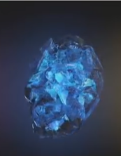
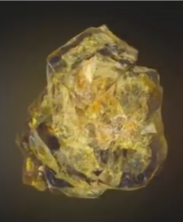
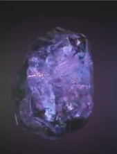
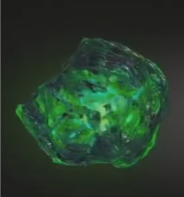
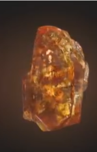
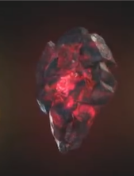

| Название камня | Цвет | Артефакт | Описание | Изображение |
|---|---|---|---|---|
| Камень пространства | Голубой | Тессеракт | Даёт возможность перемещать как себя, так и всё окружающее в любую точку. |  |
| Камень разума | Жёлтый | Скипетр | Наделяет своего обладателя эмпатией, телепатией и телекинезом. |  |
| Камень силы | Фиолетовый | Сфера | Повышает силу, прочность и все остальные способности своего обладателя, а также питает остальные пять артефактов. |  |
| Камень времени | Зеленый | Глаз Агамотто | Позволяет путешествовать во времени, а также останавливать, замедлять и ускорять временной поток. Помимо этого, камень также замедляет старение своего обладателя. |  |
| Камень души | Оранжевый | Душа | Данный камень позволяет забирать души других живых существ. Внутри него находится так называемое «карманное измерение», в котором обитают те, чьи души забрал владелец камня. |  |
| Камень реальности | Красный | Эфир | Изменяет реальность по усмотрению обладателя. |  |